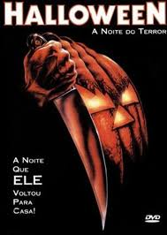

halloween

"Halloween" é um filme de terror lançado em 1978, dirigido por John Carpenter. O filme segue a história de Michael Myers, um assassino em série que foge do hospital psiquiátrico e retorna à sua cidade natal para cometer uma série de assassinatos no Dia das Bruxas.
Eu escolhi esse filme pelo motivo que eu sou um grande fã do terror principalmete filmes "slasher", como sexta-feira 13, hora do pesadelo entre outros, fez parte da minha infância e segue até hoje como meu filme/franquia favorita de todos os tempos
